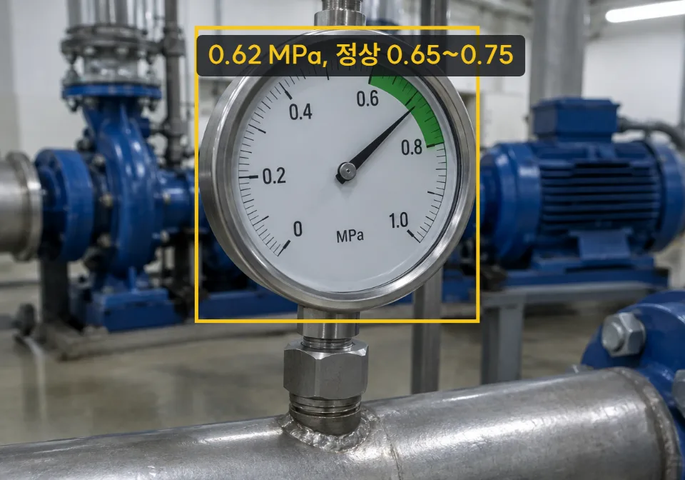

조치 요청 물결 전환 실험 — 팝오버의 [조치 요청]을 누르면 그 단추에서 물결이 퍼지며 "조치 요청됨" 판으로 넘어갑니다. 오른쪽에서 시안(A · B · C)을 고르거나 값을 바꿔 보고, [처음으로]로 되돌려 다시 누르세요. 참고: Distortion Waves(SwiftUI · Metal) — 웹으로 다시 짠 것입니다.
위험
압력 0.86 MPa

N₂ 배관 압력계10:12:40